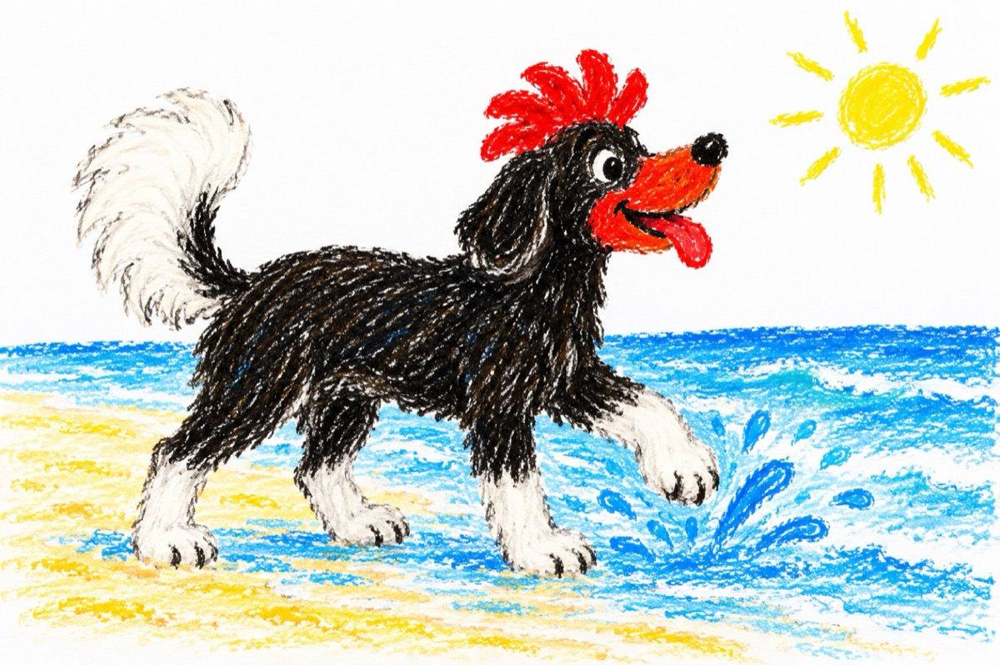

Pe plajă
Brazilia. La Troncoso – Bahia.
Azi am întâlnit pe plajă
Un cățel cu coada albă
Albă coada, botul roșu,
Și-avea creasta, cum cocoșul!
Negru tot picioare albe,
S-a băgat ca să se scalde
De nu credeți eu vă zic;
În Oceanul Atlantic.
Dar când a ieșit la mal,
Era ca un cașcaval.
Avea părul mătăsos
Și era tare frumos.
Misterul eu l-am aflat
Cățelul a fost pictat,
De un copil talentat.
Ce păcat că s-a scăldat!
Acum este iar curat
Dar nu mai e amuzant!...
Vasile Groza